An outline you approve
Every slide gets an assertion headline before any design happens, so the deck makes an argument.
Free & open-source Claude Code skill
Decklume turns any topic, notes or PowerPoint into a stunning, animated HTML deck. It writes the story first, shows your slides in three styles, then checks every slide with automated design QA.
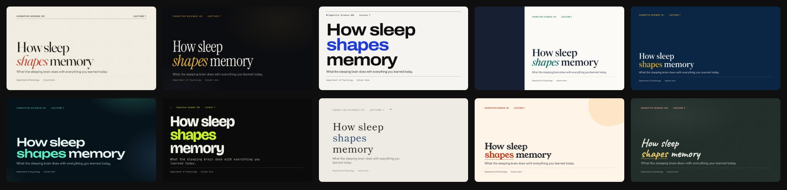
Why Decklume
Instead of asking an AI to "make it beautiful", Decklume gives it a design system: a fixed 16:9 canvas, a type scale, a 12-column grid, 22 tested layouts and a QA gate that fails a deck on real defects.
Every slide gets an assertion headline before any design happens, so the deck makes an argument.
Pick a look by seeing your own title and content slides rendered side by side.
Elements glide between slides with the View Transitions API. Builds reveal points one click at a time.
Overflow, overlap, contrast, type size, fonts and AI-slop patterns are caught automatically, with a contact sheet.
Press P for notes, a timer and the next slide. Overview, blackout, jump-to-slide, edit text in the browser.
A single HTML file that runs anywhere, a vector PDF with selectable text, PNGs, or a live URL.
How it works
10 designer themes
Each theme is complete across all 22 layouts and passes the same QA. Click any one to open the live demo lecture and use → to navigate.
Editorial serif on warm paper — a magazine feature you can present.
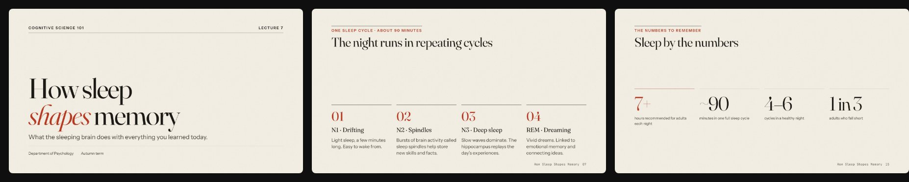
Dark cinematic keynote — serif headlines glowing amber in a quiet room.
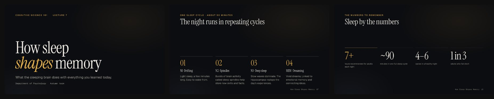
Swiss International Style — bold grotesk, strict grid, one cobalt signal.
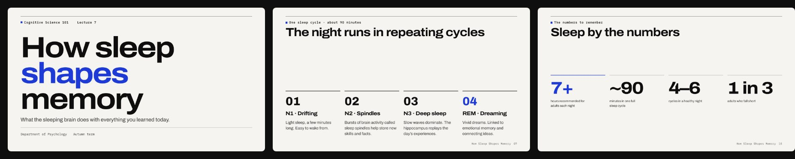
Academic and clear — a reading-first theme for lectures, seminars and theses.
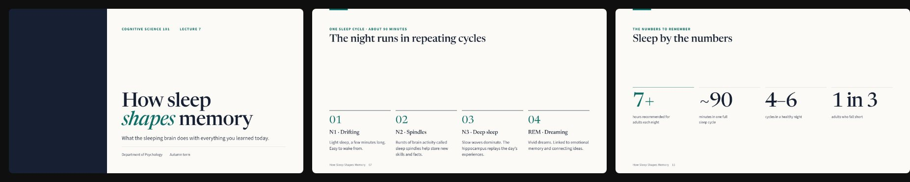
Consulting-grade clarity — action titles, numbered exhibits, navy and gold.
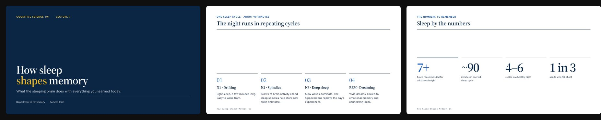
Product-launch glow — wide display type, glass panels and northern-light gradients.
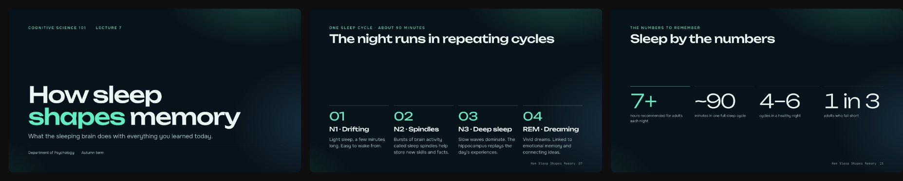
Brutalist terminal energy — monospace grid, black field, acid-lime signal.
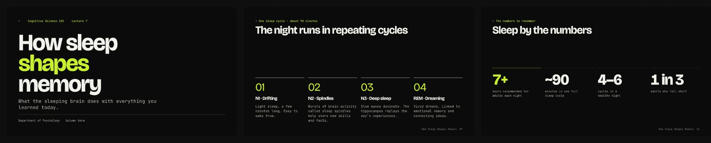
Japanese minimalism — stillness, generous space and a single indigo note.
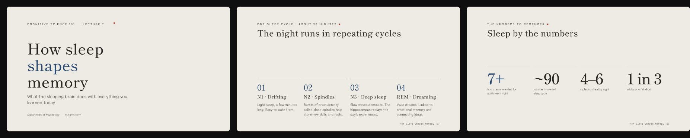
Warm and playful — rounded shapes, friendly serif and tomato-red energy.
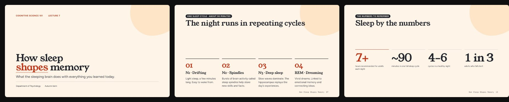
A real classroom blackboard — handwritten headings, chalk-yellow highlights.
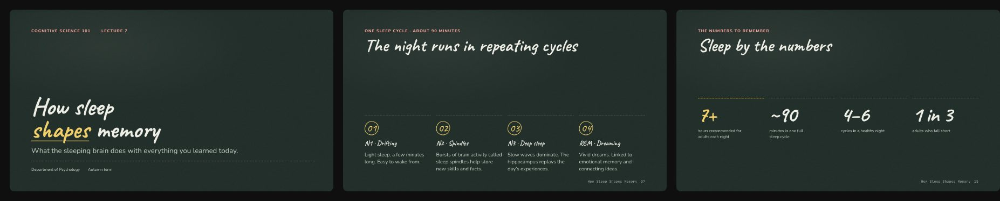
Install
# run these one at a time inside Claude Code
/plugin marketplace add https://github.com/GgauravJ05/decklume
/plugin install decklume@decklume
git clone https://github.com/GgauravJ05/decklume.git cp -R decklume/skills/decklume ~/.claude/skills/
Then just ask: “Make a 15-minute lecture on photosynthesis for first-year students.”
FAQ
Install the Decklume skill in Claude Code, then ask for the presentation you need, for example “Make a 15-minute lecture on photosynthesis.” Decklume outlines the story, shows your slides in three styles, builds the deck and checks it with automated design QA.
Yes. Decklume is free and open source under the MIT license. You need Claude Code to run the skill.
Yes. It reads .pptx files, including bullet levels, tables, images, speaker notes and native chart data, and redesigns them as an animated HTML deck.
Every deck is a single HTML file that runs in any browser. Press P for the presenter view with notes and a timer. Export a vector PDF with selectable text, or a PNG per slide, with one command.
Yes. There are themes for lectures (Campus), classrooms (Chalk), thesis defenses (Folio), case competitions (Atlas) and hackathons (Volt), plus layouts for definitions, timelines, formulas and charts.